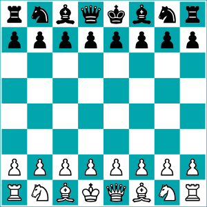

a1 — h8
A game of two kingdoms, thirty-two pieces, and zero luck.
Learn the rules from scratch, study tactics and openings, watch grandmaster games, and play against bots or real people — all in one place.

What is chess?
Chess is one of the oldest board games in the world, and still one of the most popular. Played between two players, it mimics a war between two kingdoms — sometimes called Western or international chess, to set it apart from relatives like xiangqi (Chinese chess) and shogi (Japanese chess).
Organized chess arose in the 19th century, and millions of people still play it recreationally and competitively today. Competition is governed internationally by FIDE, the International Chess Federation.
Chess is a turn-based strategy game with no hidden information, which means luck is virtually non-existent — every game is decided by the decisions both players make.
Get started
Learn
Piece moves, setup, check & checkmate, castling, en passant, and how a game ends.
Media
Channels and games worth watching — from world championships to fast, chaotic blitz.
Play
Jump into a real game against a bot or another player, free, in your browser.